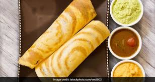
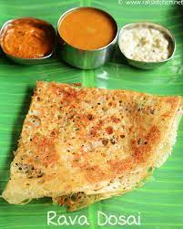

Rawa Dosa Recipe
This is a south indian food.It is a rice pancake recpie,originating from
south india.It is made from fermented batter.Its main ingredient are rice and
black gram, ground together inn a fine,smooth batter with a dosa of salt.It
is very healthy food,highin carbohydrates and contain no added sugars or saturated
fats.It is also good source of protein.It contains 112 calories,84% carbohydrates
and 16% protein.The fermented process increases vitamin B and Vitamin C content.
Ingredients
- 1/2 cup rawa
- 1/2 cup rice flour
- 1/4 cup all-purpose flour
- 2 to 3 tablespoons onion very finely chopped
- 1 green chilli finely chopped
- 1 teaspoon grated ginger
- 1/2 teaspoon cumin
- 1/4 to 1/2 teaspoon crushed black pepper
- 3/4 teaspoon salt
- 6 curry leaves
- 2 tabespoons coriander
- 2 t 2 and 1/2 cups water
- 1 tablespoon curd
- 2 to 3 tablespoons oil or ghee
How to make the recipe
Preparation
- Add rava, rice,flour,all-purpose flour,salt,ginger,
green chillies,coriander leaves, curr leaves to a bowl.
- Next add cumin,crushed pepper, onion and yogurt.
- Pour 2 cups water ad begin o make the batter, Add more water
and bring it to a runny consistency.
- Taste the batter and add more salt if needed.Rest the batter for 20 mins.
- If using a cast iron pan,grease it well and wipe off any excess oil.
How to make Rawa Dosa
- Heat the pan on a medium high heat.Stir the batter well.🍳
- Ensure it is very runny and is pourable. At this stage you can add more
water if needed to bring to the desire consistency.😄
- When it is hot enough, stir the batter very well and begin to pour
it from the sides across the pan in a circular motion.
- Then fill up the gaps f any by pouring more batter
- Reduce the flame to low.Pour 1 tsp oil across the edges and a
little over the rawa dosa.
- When it is done cooking,it will begin to peel off the edges on its own.
- if you make very very thin (paper thin dosas)then you don't need to cook on
the other side.
- When the rava dosa base become crisps & golden,remove it to a serving plate.😋
- Optionally you can also flip and toast the dosa on the other side. And back
again.🍽

To make next Rawa Dosa
Ensure the pan is hot again
Stir the batter well before every pouring the batter every time.If needed
add more water to bring it to consistenc.
It is best served hot as it turns soft when it cools down.Serve with any chutney.😍

There are some other site here you can check for rawa dosa recipe.
These are some recipe which are my favouraite.
Recipe 1
Recipe 2
Recipe 3
Recipe 4
Recipe 5